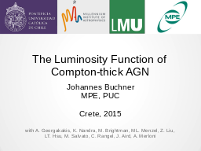
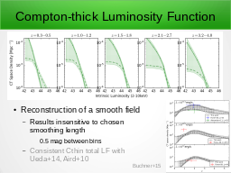
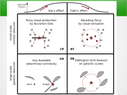
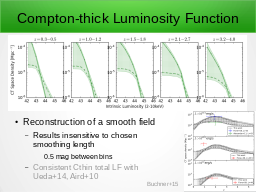
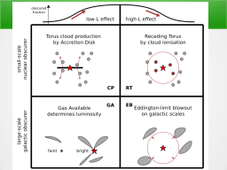

Table of contents |
Author: Johannes Buchner Homepage: http://astrost.at/istics/ Further information: The Luminosity Function of Compton-thick AGNAbstract: A robust determination of fraction of obscured and Compton-thick AGN is a long-standing issue in AGN research. We address this problem using a multi-tiered survey of 2000 X-ray hard-band detected AGN with redshifts in the range z=0.5-4. The X-ray spectrum of each source is analysed using a Bayesian fitting technique capable of handling the low X-ray counts, errors in the optical counterpart identification of X-ray sources and uncertainties in photometric redshift determination. This yields luminosities in the interval L=10^42-46 erg/s and column densities extending into the Compton thick regime, N_H=1e20-1e26 cm^-2. For determining the column density distribution and luminosity function, I will present a new Bayesian non-parametric method which propagates all uncertainties. The fraction of Compton-thick AGN is constrained to 38(+-8)% averaged over cosmic time, while obscured (NH>1e22) AGN represent 78%(+-5) of the population. These fractions evolve with cosmic time, as AGN of different obscurations show distinct evolutionary patterns, with AGN around NH~1e23 cm^-2 evolving the fastest. We study the luminosity dependence of the fraction of obscured AGN in detail, and find that this relationship too evolves over cosmic time. Physically motivated models that can explain the observed trends will be discussed. 


 



|